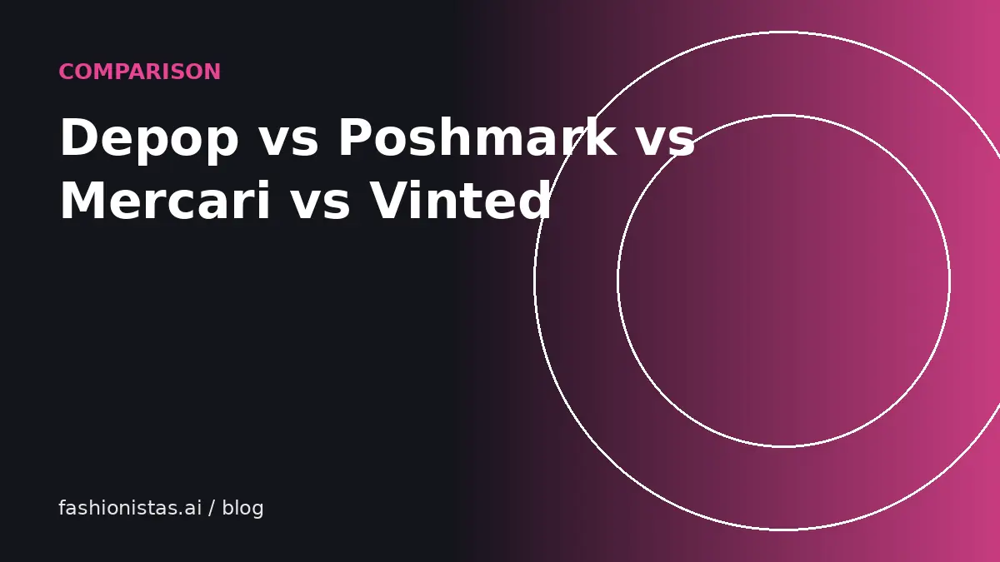

Depop vs Poshmark vs Mercari vs Vinted: which app should you sell on?

The four biggest clothing resale apps in the US work differently and attract different buyers. The best app for a vintage band tee isn't the best for a Lululemon set or a designer bag. Here's how they compare on audience, what sells, fees, shipping and effort, so you can pick where to start, and where to crosslist.
At a glance
| Poshmark | Depop | Mercari | Vinted | |
|---|---|---|---|---|
| Typical buyer | Brand-focused, many women 25 to 45 | Gen Z and younger millennials | Broad, general marketplace | Bargain-focused, everyday clothing |
| Sells best | Mall and contemporary brands, athleisure, handbags | Vintage, Y2K, streetwear, unique pieces | Everything, including non-clothing | Low-to-mid price clothing |
| US seller fee | $2.95 under $15; 20% at $15+ | None; 3.3% + $0.45 processing | 10% of item + buyer-paid shipping | None (buyer pays a Vinted fee) |
| Shipping | Prepaid label, buyer pays, up to 5 lb standard | Depop labels or your own | Prepaid label or your own; you choose who pays | Prepaid label, buyer pays |
| Effort style | Social: sharing, parties, offers | Social and visual | Low-effort listing | Low-effort, price-driven |
Fees last checked Oct 2026 on each app's official pages. See the full fee comparison for worked examples.
Poshmark
Strengths: A large, loyal audience that shops by brand. Buyers expect to make offers, and Offer to Likers lets you send a discount to everyone who liked an item at once. Shipping is simple: one prepaid label, buyer pays. Posh Authenticate covers eligible items sold for $500 or more.
Weaknesses: The 20% fee is the highest of the four. The $2.95 minimum makes cheap items hard to sell profitably. Visibility depends partly on regularly sharing your listings, which takes daily time.
Best for: contemporary womenswear (Madewell, Reformation, Free People), athleisure (Lululemon), premium denim, mid-range and designer handbags, and shoes.
Depop
Strengths: No selling fee for US sellers, just payment processing. A young, style-driven audience that pays for the right vintage, Y2K and streetwear pieces. Worn photos and a strong visual style help.
Weaknesses: Mainstream mall brands can be slow. Buyers often expect a curated, aesthetic shop. Boosted Listings cost 12% on boosted sales in the US, which can add up.
Best for: vintage, Y2K, 90s, streetwear, graphic and band tees, unique and handmade pieces, and trend-driven items.
Mercari
Strengths: A broad marketplace that sells clothing alongside electronics, toys, home goods and more, so it attracts general shoppers. Listing is quick and there's no sharing or community activity required. The flat 10% fee is simple.
Weaknesses: The 10% fee applies to buyer-paid shipping too. Less of a fashion-specific audience, so premium brands may sell for slightly less than on Poshmark.
Best for: everyday brands, bundles, kids' clothes, shoes, and anyone who also sells non-clothing items.
Vinted
Strengths: No seller fees for US sellers; the buyer pays a Vinted fee, usually 5% + $0.70, plus shipping. Prepaid labels keep shipping simple. Huge user base in Europe, growing in the US.
Weaknesses: Buyers are price-focused, so expect lower prices than on Poshmark for the same item. The US audience is still smaller than the established apps'.
Best for: everyday clothing at low to mid prices, kids' clothes, basics, and decluttering quickly.
Which one should you start with?
- Selling your own closet of mall and contemporary brands: start on Poshmark, crosslist to Mercari.
- Vintage or Y2K finds: start on Depop, crosslist to eBay.
- Lots of cheap basics: Vinted and Mercari.
- Designer menswear: Grailed and eBay rather than these four.
- Sneakers over $150: eBay. See how to sell sneakers.
- A bit of everything: Mercari as your base, with others added for the right items.
The real answer for most sellers is more than one. Crosslisting puts each item in front of more buyers, and you'll quickly learn which app sells what for you.
How buyers find items on each app
- Poshmark blends search with social activity. Sharing your listings puts them back in front of followers and in feeds, and parties (themed shopping events) give extra exposure.
- Depop leans on its Explore and search pages, hashtags and a visual feed. Shops with a clear style tend to build followers who return.
- Mercari is search-first. A precise title and filled-in fields matter most.
- Vinted is search and browse driven, with filters doing a lot of work. Low prices and good photos stand out.
This affects your daily routine. Poshmark rewards a few minutes of sharing most days. Depop rewards a cohesive shop and regular new listings. Mercari and Vinted reward getting listings right the first time.
Buyer protection and returns
All four hold the buyer's payment and offer protection for items that don't arrive or are significantly not as described, with a short window after delivery to report problems. None of them generally accept returns for "doesn't fit" or "changed my mind" on standard listings. That puts a premium on clear photos, measurements and honest condition notes, whichever app you use. Read each app's current policy before you sell, since details change.
Getting paid
Payouts differ too. Poshmark releases earnings after the buyer accepts the order or the acceptance window passes, then you transfer to your bank. Mercari releases funds after the buyer rates the transaction, with free direct deposit once a day and a $3 Instant Pay option. Depop pays through Depop Payments to your bank. Vinted credits your Vinted balance after the order is completed, then you transfer it. Check each app's payout timing if cash flow matters to you.
Fees on a $40 sale, side by side
On a $40 item with buyer-paid shipping, no tax and no promotions, you'd keep about $32.00 on Poshmark, $38.23 on Depop, $36.00 on Mercari and $40.00 on Vinted. Last checked Oct 2026.
Switching or adding apps later
You're not locked in. Your photos and descriptions move with you, so adding a second app later takes minutes per item. Many sellers start on one app, learn the basics, then crosslist their best sellers to a second and third.
Making any app work
Whichever you choose, the same basics drive sales: clear photos, searchable titles, honest condition notes, measurements, and fair prices from sold comps. The fashionistas.ai listing tool drafts one listing from your photos and adapts it for each of these apps, so trying several costs you minutes, not hours.
FAQ
Is Depop or Poshmark better for selling clothes?
It depends on what you sell. Poshmark is better for brand-name contemporary womenswear, athleisure and handbags. Depop is better for vintage, Y2K and streetwear and has much lower fees for US sellers.
Which resale app is the easiest to sell on?
Mercari and Vinted require the least ongoing effort: list, ship and get paid, with no sharing or community activity needed.
Which app has the lowest fees?
Vinted charges US sellers no fee. Depop charges only payment processing, 3.3% + $0.45. Last checked Oct 2026.
Can I sell the same item on Poshmark and Depop?
Yes. Many sellers crosslist. Just delist from the other app as soon as the item sells.
Is Vinted good for selling in the US?
It's growing and has no seller fees, which makes it attractive for low- to mid-priced clothing. Buyers are price-focused, so expect lower prices than on Poshmark.